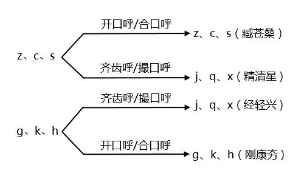

声母：之徐思而和腭化现象
本节介绍4个声母：
| z [ts] 之 | c [tsʰ] 徐 | s [s] 思 | r [dz] 而 |
先说前三个音，它们的调音部位和[d]、[t]、[n]、[l]相同，都是“齿龈音”。不同之处在于调音方式，[ts]和[tsʰ]是“齿龈塞擦音”。“塞擦音”和“塞音”类似，也可以有清浊对立和送气对立。 [s]是“齿龈擦音”。如果把潮汕话的声母按辅音表排列，可以看出齿/龈部位的音最多，对应的主动调音器官是舌头前部（舌尖和舌叶），这里是人类调音能力最灵活的区域。
| 双唇 | 齿/龈 | 软腭 | 喉 | ||
| 塞音 | b [p] p [pʰ] bh [b] |
d [t] t [tʰ] |
z [ts] c [tsʰ] r [dz] |
g [k] k [kʰ] gh [g] |
|
| 鼻音 | m [m] | n [n] | ng [ŋ] | ||
| 擦音 | s [s] | h [h] | |||
| 边音 | l [l] | ||||
腭化现象和尖团合流
前面介绍过，普通话的 z、c、s 和 g、k、h 两组声母，不与齐齿呼、撮口呼的韵母相拼；j、q、x 这组声母，不与开口呼、合口呼的韵母相拼。这几组声母之间形成互补分布，如下表所示。
| 齿龈音 z、c、s [ts, tsʰ, s] |
腭前音 j、q、x [tɕ, tɕʰ, ɕ] |
软腭音 g、k、h [k, kʰ, x] |
|
| 开口呼 | + | + | |
| 齐齿呼 i- | + | ||
| 合口呼 u- | + | + | |
| 撮口呼 ü- | + |
从历史上看，现代普通话里的 j、q、x，是从 z、c、s 和 g、k、h 演变而来的。如下图所示。
 〔图1〕
从发音的角度可以解释音变的原因。齐齿呼、撮口呼的韵母分别以[i]、[y]开头，查元音图可知，[i]、[y]都是前高元音，发音时舌头接近硬腭前端。声母受到了韵母的同化作用，齿龈音 z、c、s 变得偏后，向腭前音演变；软腭音 g、k、h 变得偏前，也向腭前音演变：这就是“腭化现象”。而在开口呼和合口呼的韵母之前，腭化条件不成立，z、c、s 和 g、k、h 各自保留了原来的音值。
清代人把 j、q、x 中，来自 z、c、s 的称为“尖音”，来自 g、k、h 的称为“团音”，如果两类字的音值完全一样，区分不出来了，就称为“尖团合流”。北京话在清代中后期才完成了“尖团合流”。现代京剧，常常还要区分尖团，比如“小姐”不念作 xiǎo jiě，而念成 siǎo ziě。
汉语各地方言的腭化情况、腭化程度不一，北方话大多是“尖团合流”，南方方言大多还能“区分尖团”。潮汕话也是尖团不混，在齐齿呼韵母之前（潮汕话没有撮口呼），齿龈音 z、c、s 的腭化程度很高，音值接近普通话的 j、q、x，但软腭音 g、k、x 的腭化程度很低，两者不相混淆。如下表所示。
| 齿龈音 z、c、s [ts, tsʰ, s] |
腭前音 [tɕ, tɕʰ, ɕ] |
软腭音 g、k、h [k, kʰ, x] |
|
| 开口呼 | + | + | |
| 齐齿呼 i- | + | + | |
| 合口呼 u- | + | + |
在潮语拼音的设计上，既然 z、c、s 和 j、q、x 的部位相近、分布互补、来源相同，就不妨合并成一组声母，统一用 z、c、s 来表示，把 j、q、x 看成是 z、c、s 的变体，这也是从“十五音”字典以来的传统。
不过，在潮语拼音输入法中，为了照顾大家的习惯，当声母 z、c、s 在 i 之前时，可以分别用 j、q、x 键代替。比如要打“漳”字，键入 ziang 或 jiang 皆可；要打“齐”字，键入 ci 或 qi 皆可；要打“心”字，键入 sim 或 xim 皆可。
发音练习：腭前音和软腭音
下面的例子都是以 i 开头的韵母（齐齿呼），每一对字在普通话里同音（尖团合流），但在潮汕话中还保留着声母的对立（尖团不混）。
练习一：z [tɕ] —— g [k]
际 zi³ —— 记 gi³
酒 ziu² —— 九 giu²（九霄、九龙）
就 ziu⁶ —— 咎 giu⁶
焦 ziou¹ —— 骄 giou¹（汕头音的韵母是iau）
将 ziang¹ —— 疆 giang¹（将来）
煎 zieng¹ —— 坚 gieng¹（汕头音的韵母是iang）
尖 ziem¹ —— 兼 giem¹（汕头音的韵母是iam）
浸 zim³ —— 禁 gim³
瘠 zik⁴ —— 吉 gik⁴
集 zip⁸ —— 及 gip⁸
晶 ziaⁿ¹ —— 京 giaⁿ¹
浆 zieⁿ¹ —— 姜 gieⁿ¹（汕头音的韵母是ioⁿ）
练习二：c [tɕʰ] —— k [kʰ]
妻 ci¹ —— 欺 ki¹
齐 ci⁵ —— 奇 ki⁵
秋 ciu¹ —— 丘 kiu¹
囚 ciu⁵ —— 求 kiu⁵
嫱 ciang⁵ —— 强 kiang⁵
签 ciem¹ —— 谦 kiem¹（汕头音的韵母是iam）
雀 ciak⁴ —— 却 kiak⁴
枪 cieⁿ¹ —— 腔 kieⁿ¹（汕头音的韵母是ioⁿ）
练习三：s [s] —— h [h]
消 siou¹ —— 枭 hiou¹（汕头音的韵母是iau）
小 siou² —— 晓 hiou²（汕头音的韵母是iau）
湘 siang¹ —— 香 hiang¹
想 siang² —— 响 hiang²（思想）
相 siang³ —— 向 hiang³（宰相）
癣 sieng² —— 显 hieng²（汕头音的韵母是iang）
心 sim¹ —— 鑫 him¹
箱 sieⁿ¹ —— 乡 hieⁿ¹（汕头音的韵母是ioⁿ）
发音练习：齿龈音和腭前音
潮汕话中，声母 z、c、s 在齐齿呼韵母之前腭化，在开口呼、合口呼韵母之前保持不变。下面的例子用于对比腭化与否的差异，每一行中随着韵母的不同，同一个声母的音值也随之变化，发生腭化的用星号(*)标记。
练习四：a —— ia —— ua（开口呼——齐齿呼——合口呼）
楂 za¹ —— 遮 *zia¹ —— 抓 zua¹
早 za² —— 者 *zia² —— 纸 zua²
练习五：ang —— iang —— uang
棕 zang¹ —— 漳 *ziang¹ —— 装 zuang¹
藏 zang⁶ —— 杖 *ziang⁶ —— 撞 zuang⁶（西藏）
灿 cang³ —— 唱 *ciang³ —— 闯 cuang³
删 sang¹ —— 商 *siang¹ —— 宣 suang¹
练习六：ak —— iak —— uak
萨 sak⁴ —— 屑 *siak⁴ —— 朔 suak⁴
练习七：aⁿ —— iaⁿ —— uaⁿ
三 saⁿ¹ —— 声 *siaⁿ¹ —— 山 suaⁿ¹
普通话的 r 和潮汕话的 r
潮汕话的[dz]和普通话的 r，辖字大致对应，因此潮语拼音设计成 r，和汉语拼音保持对应。不过，普通话的 r 是卷舌近音[ɻ]，潮汕话的 r 是齿龈塞擦音[dz]。和[ts]、[tsʰ]、[s]一样，[dz]在[i]之前会腭化成[dʑ]。
练习八：z [ts] —— c [tsʰ] —— s [s] —— r [dz]
子 zv2 —— 此 cv2 —— 史 sv2 —— 耳 rv2
薯 zv5 —— 徐 cv5 —— 词 sv5 —— 而 rv5
主 zu2 —— 取 cu2 —— 暑 su2 —— 乳 ru2
准 zung2 —— 蠢 cung2 —— 损 sung2 —— 允 rung2
长 ziang2 —— 厂 ciang2 —— 想 siang2 —— 嚷 riang2（市长、县长。这一行的声母腭化）
在实际口语中，塞擦音[dz]有时会读成擦音[z]，有些书就把这个声母记作[z]。不同的记法会影响音系上的处理：如果记作塞擦音[dz]，则和[ts]、[tsʰ]构成清不送气、清送气、浊的对立；如果记作擦音[z]，则和[s]构成清浊对立。